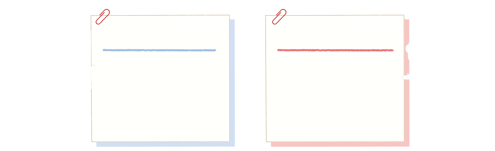
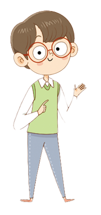
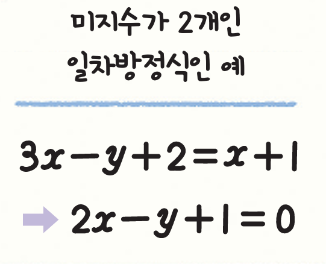
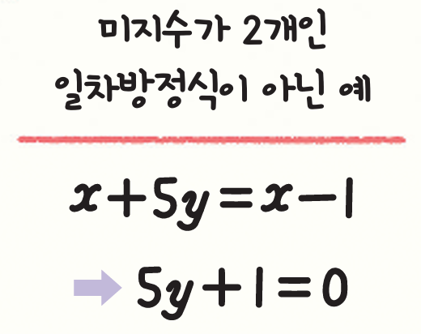
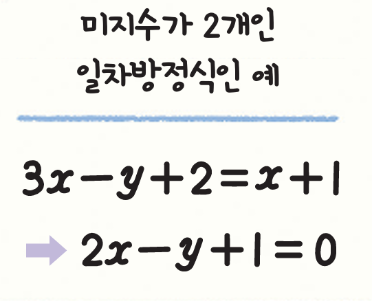
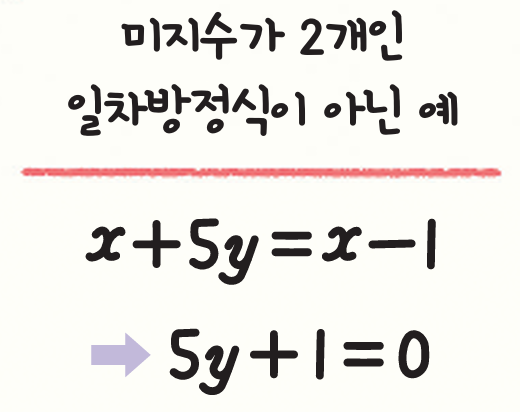

미지수가 2개인 일차방정식과 그 해는 무엇일까? (1)
일반적으로 미지수가 2개인 일차방정식은
\(ax + by + c = 0\) \((\text{단}\) \(a, \; b, \; c \;\) \(\text{는 상수}\), \(\; a \neq 0, \; b \neq 0)\)
과 같이 나타낼 수 있다.


 



일정한 값을 갖는 수를
상수라고 한다.